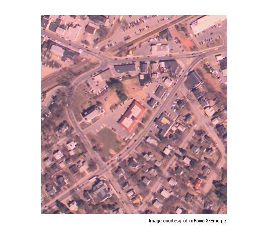
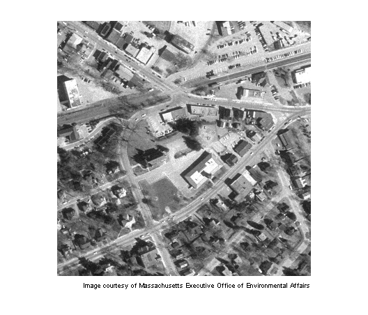
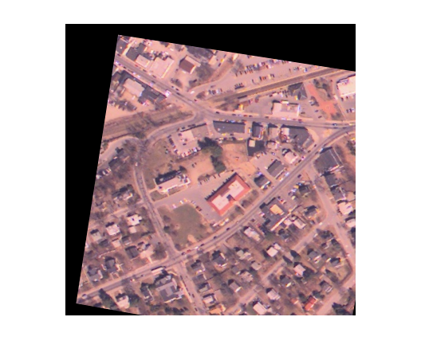

航空写真から正射写真へレジスタリング
2 つの同じ風景のイメージは、同じ座標系にある場合にのみ直接比較できます。 イメージのレジストレーションは、1 つのイメージを別のイメージの座標系に変換するプロセスです。
目次
手順 1: イメージの読み込み
イメージ westconcordorthophoto.png は地上にレジストレーションされた正射写真です。 イメージ westconcordaerial.png は、飛行機から撮影され正射写真と比較して変形されているためレジストレーションされません。
unregistered = imread('westconcordaerial.png'); figure, imshow(unregistered) text(size(unregistered,2),size(unregistered,1)+15, ... 'Image courtesy of mPower3/Emerge', ... 'FontSize',7,'HorizontalAlignment','right');
registeredOriginal = imread('westconcordorthophoto.png'); figure, imshow(registeredOriginal) text(size(registeredOriginal,2),size(registeredOriginal,1)+15, ... 'Image courtesy of Massachusetts Executive Office of Environmental Affairs', ... 'FontSize',7,'HorizontalAlignment','right');
手順 2: コントロール ポイントの読み込みと追加
4 組のコントロール ポイントが選択されています。 MAT ファイルからこれらのポイントを読み込みます。 これらのポイントの処理を続行するには、手順 3 「幾何学的変換の推測」に進みます。
load westconcordpoints
オプションで、Control Point Selection Tool (cpselect) を使用してあらかじめ選択したポイントを編集または追加します。cpselect を使用すると、対応するコントロール ポイントのペアを選択できます。 コントロール ポイントは、道路の立体交差や地勢など 2 つのイメージで識別できるランドマークです。 レジストレーションされていないイメージは RGB イメージですが、cpselect はグレースケールイメージに対してのみ利用できるので、この関数に RGB イメージの 1 つの平面を渡します。
cpselect(unregistered(:,:,1),'westconcordorthophoto.png',...
input_points,base_points)[ファイル] メニュー、[ポイントをワークスペースへ保存] オプションを選択して、コントロール ポイントを保存します。 ポイントを保存して変数 input_points と base_points を上書きします。
手順 3: 幾何学的変換の推測
レジストレーションされていないイメージは飛行機から撮影されており、地形が比較的平坦な歪みの大部分は射影になる可能性があります。cp2tform は、選択した input_points と base_points に最適な射影歪みのパラメーターを見つけます。
t_concord = cp2tform(input_points,base_points,'projective');
手順 4: レジストレーションされていないイメージの変換
レジストレーションされていないイメージの 1 つの平面でポイントを選択した場合でも、RGB イメージ全体を変換できます。imtransform は、各平面に同じ変換を適用します。 'XData' 値と 'YData' 値を選択すると、レジストレーションされたイメージは正射写真と一致します。
info = imfinfo('westconcordorthophoto.png'); registered = imtransform(unregistered,t_concord,... 'XData',[1 info.Width], 'YData',[1 info.Height]);
手順 5: レジストレーションされたイメージの表示
figure, imshow(registered)
このイメージを正射写真およびレジストレーションされていないイメージと視覚的に比較してみます。まずは手順 2 に戻ってみます。コントロール ポイントを選択し、4 組以上のポイントを使用します。結果は改善されましたか。ポイントを凝集するとどうなるでしょう。
より大きなイメージで実験する場合は、上記の手順を実行して concordaerial.png を concordorthophoto.png にレジストレーションします。